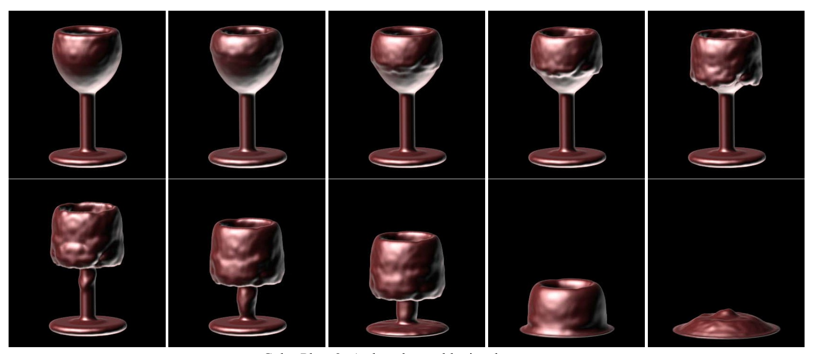

Our project will simulate the melting and flowing of viscous liquids. Specially, we will attempt to render lava flowing into an object such as a chocolate bunny and melting it.
We wanted to challenge ourselves with a topic that is still a open problem in the graphics community. The problem is finding an efficient and accurate simulation of phase transitions for materials that can melt, flow, and solidify without using very complex implementations. The main challenge is simulating high viscosity liquids, such as lava and chocolate. We see viscous liquids everywhere in daily life: ketchup, toothpaste, yogurt, lotion, etc. Therefore this challenge is important because so many different animations require this kind of rendering in an accurate and quick way.
There are 2 sub-challenges we need to solve in order to solve the full material phase transition. One is the method of melting. There are currently several different approaches: particle-based melting, mesh-based melting, and grid-based melting. Second, we need the heat and phase transition simulation. There are also several approaches to model phase transition using varied viscosity with temperature, latent heat, etc. We will most likely use a version of the grid-based melting and a simplified model for phase transition.
For a successful project, we must accomplish the melting of a chocolate bunny, with a heat source that we place anywhere in the scene. The heat source can be invisible. This is the main crux of our project - simulating phase transition for a viscous liquid. To solve this, we would need to have figured out what methods and formulas to use for heat transfer and phase transition. We don’t need to worry about simulating the heat source at this time - it can just be “placed” to the right of the bunny in the scene, like an invisible heater. We also want to concentrate on one material and get that working before experimenting with other materials such as tin or wax.
The image below is an example of what we hope to achieve (with a bunny). This is taken from page 6 of research paper: Link
If we can melt the bunny in a reasonable amount of time, we hope to add a visible flowing of lava, which will the heat source that melts the bunny. The lava flow is also a highly viscous liquid, and we must use the methods we used for the bunny to simulate the lava flow. However, an additional challenge now is to simulate the lava hitting the bunny object in the scene, as well as simulating heat transfer to the bunny with a dynamic heat source.
See what parts of the “starter code” we can use. Read our references more carefully, and conclude on which methods to use.
Implement heat transfer method and start phase transition method
Implement phase transition method and start lava
Lava implementation
Final adjustments, if lava isn’t working, experiment with different materials and heat source intensities/locations for bunny
Write report